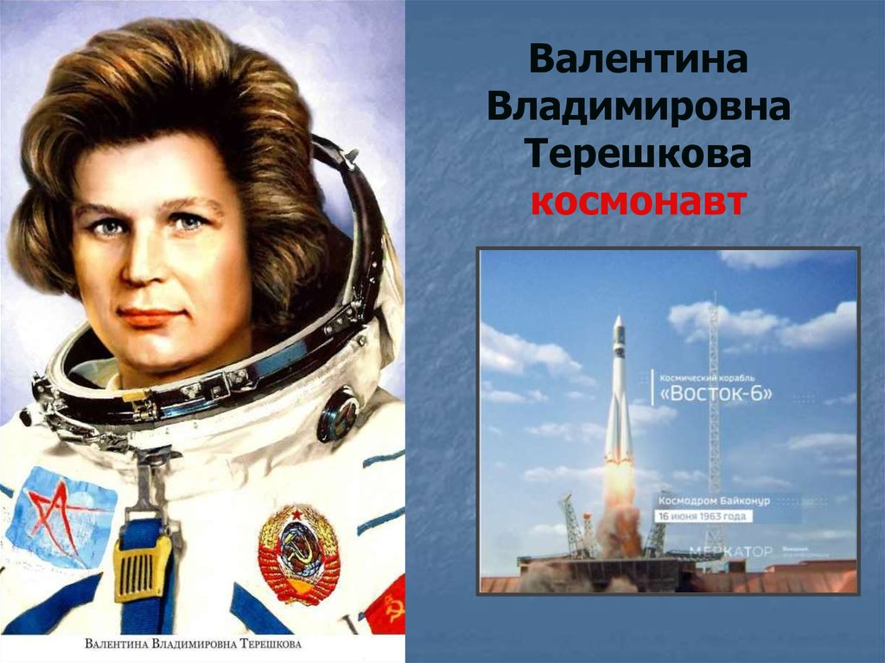

Далее вы можете увидеть и просмотреть список 3 космонавтов Россиии и СССР. Данные приведены по состоянию на 6 октября 2022 года.
Кто вообще такой космонавт?
Давайте это и узнаем!
Космона́вт — человек, проводящий испытания и эксплуатацию космической техники в космическом полёте[1].
Понятие космического полёта в разных странах различно. Согласно классификации Международной федерации аэронавтики (ФАИ), космическим считается полёт, высота которого превышает 100 км. Согласно классификации Военно-воздушных сил США, космическим полётом считается полёт, высота которого превышает 50 миль (80 км 467 м). В России же космическим полётом называется орбитальный полёт, то есть полёт, при котором аппарат должен сделать хотя бы один виток вокруг Земли. Именно поэтому общее число космонавтов в различных источниках различается.
\
Юрий Алексеевич Гагарин
Восток-1
Все вы знаете Юрия Алексеевича Гагарина, вот его небольшая биография:Юрий Алексеевич Гагарин родился 9 марта 1934 года, по документам в деревне Клушино Гжатского района Западной области РСФСР (в настоящее время — Гагаринский район Смоленской области)[4][8], то есть по месту жительства (прописки) родителей. Фактическое место рождения — роддом города Гжатска[9] (переименованного в 1968 году в город Гагарин). Является выходцем из рабочей среды: отец, Алексей Иванович Гагарин (14 (27) марта 1902[10] — 30 августа 1973[11]), — плотник, мать, Анна Тимофеевна Матвеева (20 декабря 1903 — 12 июня 1984), работница молочно-товарной фермы[комм. 1][12], награждена орденами Трудового Красного Знамени и Дружбы Народов. Дед, Тимофей Матвеевич Матвеев (1871—1918), рабочий Путиловского завода, проживал в Санкт-Петербурге, в Автове, на Богомоловской (ныне Возрождения) улице в конце XIX века[13].
Тимофей Матвеевич Матвеев — Путиловский рабочий (работал сверловщиком), революционер, дедушка Ю. А. Гагарина
Дом, в котором Юрий Гагарин жил в школьные годы. Город Гагарин (бывший Гжатск)
В семье Гагариных было три сына и дочь. Юрий был третьим по старшинству.
2 апреля 1961 года Юрий Гагарин стал первым человеком в мировой истории, совершившим полёт в космическое пространство[4][5]. Ракета-носитель «Восток» с кораблём «Восток-1», на борту которого находился Гагарин, была запущена с космодрома Байконур, расположенного в Кызылординской области Казахстана. После 108 минут[6] полёта Гагарин успешно приземлился в Саратовской области, неподалёку от Энгельса. 12 апреля 1961 года, день полёта Юрия Гагарина в космос, был объявлен праздником — Днём космонавтикиПерейти к разделу «#Полёт».

Валенти́на Влади́мировна Терешко́ва
Биография
6-го марта 1937-го года в селе Большое Масленниково, около города Тутаев, который расположен в Ярославской области РСФСР, появилась на свет Валентина Терешкова — первая женщина космонавт. Во время советско-финской войны погибает призванный на фронт отец Валентины – Владимир Аксенович. В 1945-м году Валентина поступает в Ярославскую среднюю школу. В школьные года увлекается игре на домре. После завершения семилетнего обучения Валентина устраивается браслетчицей на шинный завод города Ярославль. С 1955-го года работала на комбинате техтканей «Красный Перекоп», на котором также работали ее мать и сестра. С 1955-го по 1960-й год Валентина Владимировна проходит заочное обучение в Ярославском техникуме, по окончанию которого получает диплом техника по хлопкопрядению. В 1959-м году Валентина начала увлекаться парашютным спортом, совершила 90 прыжков при Ярославском аэроклубе. В 1957-м году будущий космонавт вступила в Комсомол, с 1957-го года – секретарь комитета при комбинате «Красный Перекоп».
Космическая подготовка
В 1962-м году Сергей Королев решил отправить в космос женщину-космонавта, в результате чего начались поиски кандидаток среди парашютисток по следующим критериям: не старше 30 лет, не выше 170 см и весом не более 70 кг. Было отобрано пять женщин, в числе которых оказалась и Валентина Владимировна. После прохождения медицинской комиссии, была зачислена в космонавты — слушатели в марте 1962-го года. Следом началась общая космическая подготовка Терешковой в отряде группы слушателей-женщин. После сдачи государственных экзаменов, 1-го декабря 1962-го года, получила должность космонавта первого отряда.
За время подготовки Валентине удалось успешно пройти ряд тренировок и испытаний: 10 суток в сурдокамере (звукоизолирующее помещение), а также нахождение в термокамере при +70 °C, 30 % влажности и надетом комбинезоне. Было проведено несколько тренировок в условиях невесомости, создаваемых при помощи маневров самолета. Их длительность составляла около 40 секунд и за это время кандидатки должны были успешно выполнить назначенные задания, вроде написание имен на листочках или попытки приема пищи.
Выбор комиссии остановился на Терешковой, основываясь не только на высокой успеваемости девушки, но и на ее социальных способностях и личных качествах.
Космический полет
16-го июня 1963-го года командир космического корабля «Восток-6», Валентина Владимировна Терешкова стартовала с Байконура. В рамках миссии состоялся совместный орбитальный полет кораблей «Восток-6» и «Восток-5», на борту которого находился Валерий Быковский.
МАТЕРИАЛЫ ПО ТЕМЕ
Полет Гагарина в космос
Во время полета проводилось подробное наблюдение за организмом женщины и мужчины в космосе, была решена проблема питания людей в космосе. Для подготовки к посадке Валентине Терешковой предстояло переориентировать корабль, с чем начали возникать трудности. После длительных настроек космонавт перестала отвечать на сообщения командного центра, когда центр связался через телекамеру – оказалось, что девушка спит. Длительные безуспешные настройки ориентации корабля вымотали космонавта. Примечательно, что Валентина Владимировна верно выполняла все установленные команды, однако космический корабль реагировал наоборот – удалялся от Земли. Позже было выяснено, что система неверно считывала данные траектории, которые вводились космонавтом, и инвертировала их в противоположную сторону. Когда данная проблема была выяснена, Валентина Владимировна ввела измененные данные и сориентировала корабль на Землю.
Спустя 2-е суток и почти 23 часа полета, «Чайка» успешно возвратилась на Землю. В районе места посадки девушка раздавала остатки продуктов для космонавтов местным жителям, в то время как сама питалась местными продуктами, что выходило за установленные миссией рамки.
За успешное проведение сложной космической миссии Валентина Терешкова — первая женщина космонавт, была награждена званием Героя СССР.
Па́вел Рома́нович Попо́вич
Биография
Павел Романович появился на свет в поселке Узин, вблизи столицы Украинской ССР – города Киев. Завершил семилетнее среднее образование, а также ремесленное училище, расположенное в г.Белая Церковь, Киевский район. В течение последнего своего года обучения (1947 г.), работал весовщиком угля, вместе со своим отцом, на Узинском сахарном заводе.
После училища будущий космонавт отправился на учебу в Индустриальный техникум города Магнитогорск, окончив который в 1951-м году, стал «техником-строителем». В этот же период, Павел Попович занимался в аэроклубе, который также окончил в 1951-м году, и обучился управлению самолета Ут-2. Спустя год, в 1952-м году, Павел Романович завершает первый курс Сталинградского авиационного училища. Следующий этап обучения космонавта начался в авиационном училище в поселке Возжаевка, который зимой 1953-го года – расформировали. С конца 1953-го года, Павел Попович начинает годовое обучение в школе ВВС города Грозный, которая в 1954-м году была переименована в Центральные авиаинструкторские курсы, цель которых — усовершенствования офицерского состава воздушных сил.
После окончания обучения, Павел Попович отправляется на службу в качестве летчик, которая длится до 1960-го года. За этот период космонавт дослуживается до майора. В 1961-м году поступает в Военно-воздушную инженерную академию на специальность «Пилотируемые воздушные аппараты, космические летательные аппараты, а также двигатели к ним».
Космическая подготовка
7-го марта 1960-го года Павел Романович зачислен в качестве слушателя-космонавта. Следующий год космонавт Попович проходит общую космическую подготовку, в том числе подготовку к 1-му пилотируемому полету на аппарате «Восток», на ряду с другими космонавтами, среди которых был и Ю. Гагарин. В январе 1961-го года Павлу Поповичу присуждают квалификацию «космонавт военно-воздушных сил». До 1-го августа 1962-го года проводит подготовку в качестве пилота космического аппарата «Восток-4».
Первый полет
МАТЕРИАЛЫ ПО ТЕМЕ
Полет Гагарина в космос
Первый полет космонавта Поповича состоялся 12-го августа 1962-го года. Состоялся первый в мире совместный космический полет аппарата «Восток-3» под управлением Андрияна Николаева и аппарата «Восток-4» под управлением Павла Поповича. Несмотря на то, что минимальное расстояние между космическими кораблями составляло 6,5 км, космонавтом было достаточно хорошо видно корабли друг друга. Во время данной миссии была проведена операция по перехвату вражеского космического аппарата. «Восток-4» выполнял обязанности перехватчика, в то время как «Восток-3» служил целью. Помимо этого космонавтами было проведение несколько медицинских исследований. Также впервые участники космического полета могли отстегнуться от кресел и перемещаться по кораблю в условиях невесомости.
15-го августа 1962-го года Павел Романович вернулся на Землю, окончив миссию продолжительностью 2 суток и 23 часа. Через четыре дня был награжден за свои заслуги перед Родиной званием Героя Советского Союза.
С сентября 1966-го по февраль 1968-го принимал участие в подготовке к космической миссии на корабле «Союз 7К-ВИ» по программе «Звезда». Несмотря на затраченные усилия Павла Поповича на изучение систем данного корабля, тренировки, в том числе на макете корабля, в 1968-м году программа «Звзеда» была закрыта. Было решено отдать предпочтение производству кораблей «Союз», нежели заняться созданием принципиально новой модели корабля. Павел Попович, Юрий Гагарин, Алексей Леонов и другие космонавты выступили в защиту программы, однако безуспешно.
Второй полет
Семилетнее обучение в инженерной академии подошло к концу, и в январе 1968-го года Павел Попович завершил высшее образование и был квалифицирован как «летчик-инженер-космонавт». До 1974-го года Павел Романович участвовал в подготовках к различным миссиям, последняя из которых предполагала полет на станцию «Салют-3».
3 июля 1974-го года командир экипажа Павел Попович и бортовой инженер Юрий Артюхин стартовали с Байконура на космическом аппарате «Союз-14», представляя собой первую экспедицию на «Салют-3». За время проведения космической мисси космонавты занимались исследованием геологических объектов поверхности нашей планеты, а также изучением различных атмосферных образований. Изучали влияние работы в космическом пространстве на человеческий организм, с последующим построением оптимального графика работы. Экипаж пробыл на орбитальной станции почти две недели, после чего благополучно возвратился на Землю.
Профессия космонавта сложна и опасна. Специалист должен управлять приборной панелью, вести отчет о своих действиях во время полета, принимать решения в нештатных ситуациях и т. д.
Основная опасность профессии — вероятность аварии даже при наличии самого современного оборудования. В некоторых случаях ошибки системы может исправить сам космонавт. Но если ракета вышла из строя и взорвалась, то космонавт не сможет избежать смертельного исхода.
.gif)
.webp)